Max Atlas
يقرّر ما هو ممكن هنا: أي الواجهات موجودة، وبأي وحدات، وهل يمكن الكتابة إليها، وما استقرّ فعلًا في المرة السابقة.
MaxManager مدير أداء لأندرويد بصلاحيات الجذر. يقرأ واجهات النواة التي يكشفها هاتفك فعلًا، ويكتب عبر مسار واحد مُدقّق، ثم يعيد قراءة كل تغيير من الجهاز. وإن لم يستقرّ التغيير، سترى ذلك — لا علامة نجاح خضراء.
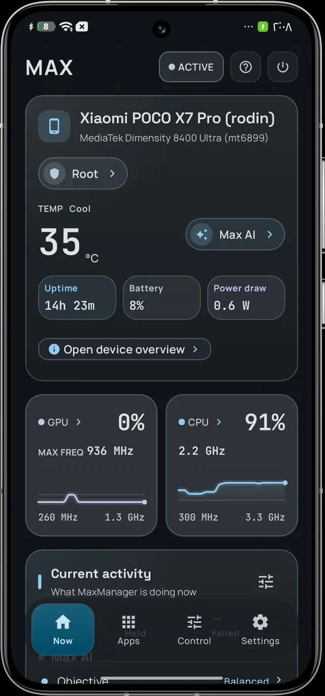
الرئيسية، اللقطة ٠٢ من ٨٨
ليست إعدادات. إنها سبب أن تبدو شاشة فارغة على هاتف لا يستطيع فعل الشيء — وسبب أن تبدو قيمة غير مفيدة بدل أن تبدو واثقة.
يُقرأ جهازك قبل رسم أي مقبض. وإن أثبتت قائمة أن الواجهة غير موجودة، لا تُعرض — لا مفتاح باهت، ولا وعد بما لا يستطيعه العتاد.
كل تغيير يمرّ عبر محكّم واحد، ثم يُقرأ من الجهاز. والقيمة التي لم تستقرّ تُعرض مع محاولة تراجع — ولا تُحسب نجاحًا.
الرقم الذي لا يستطيع التطبيق قياسه يُعرض status_unknown أو شرطة طويلة. ولا يملأ الفراغ بصفر مقنع.
Max AI وMax Atlas وسياسة كل تطبيق تبقى مغلقة حتى تشغّلها، وطبقة السلامة تحتفظ بالأولوية المطلقة في مسار الكتابة.
كل إطار أدناه لقطة حقيقية من جهاز: ١١٦٢ × ٢٤٨٠، واختيار واحد لشريط الحالة، وسمة داكنة في كل الشاشات. افتح أي إطار للحجم الكامل.


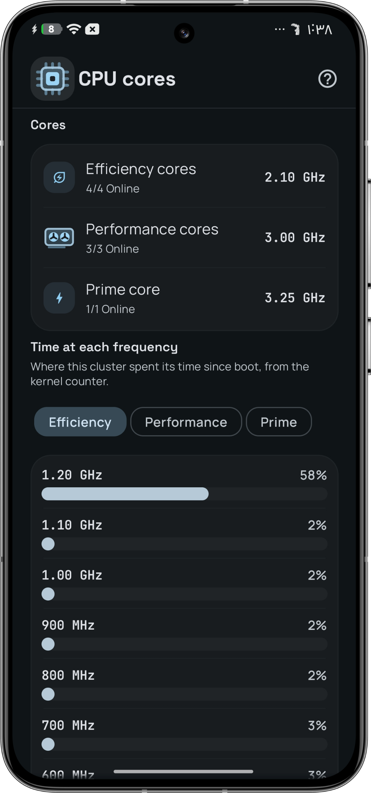


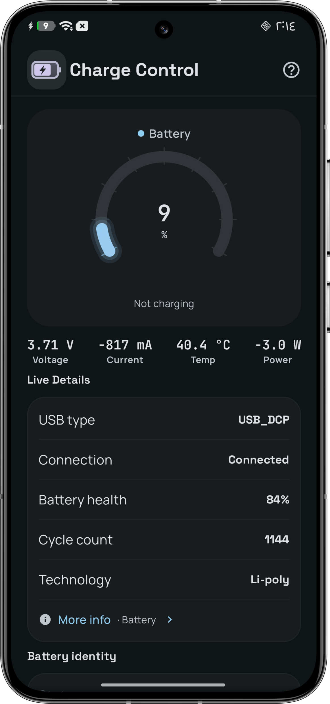


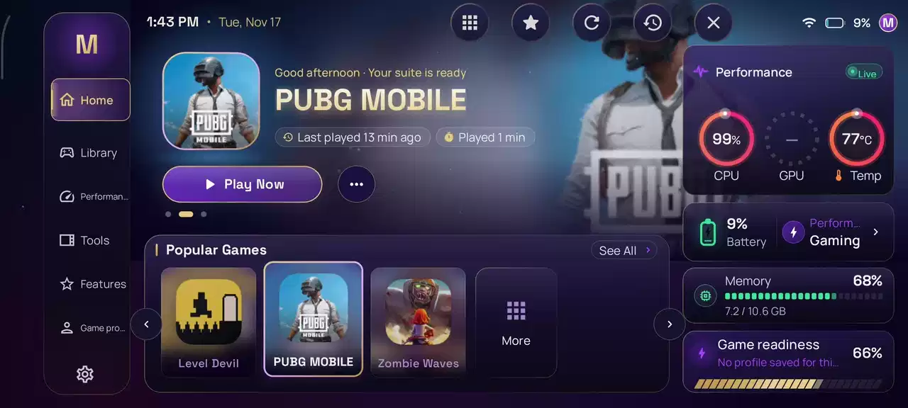

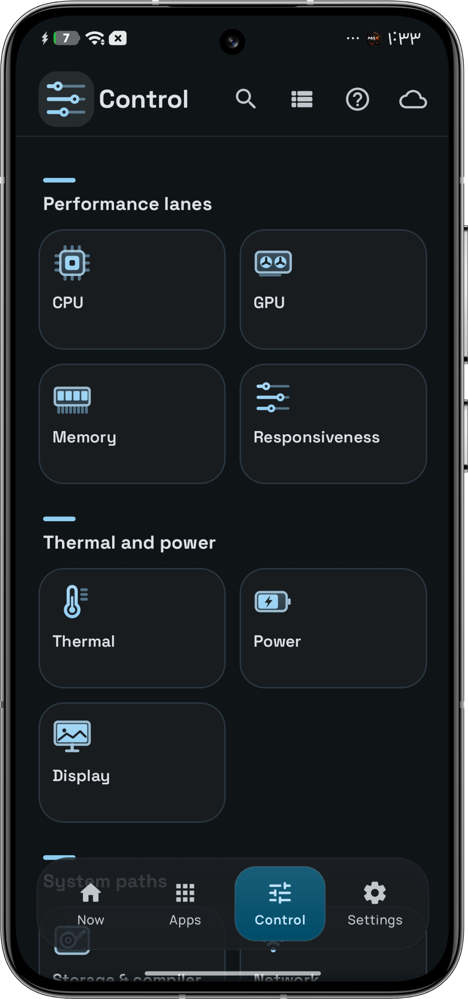

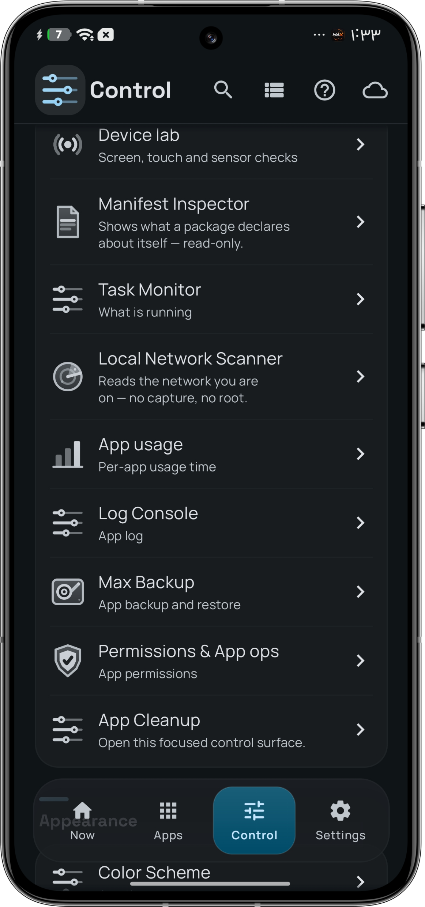
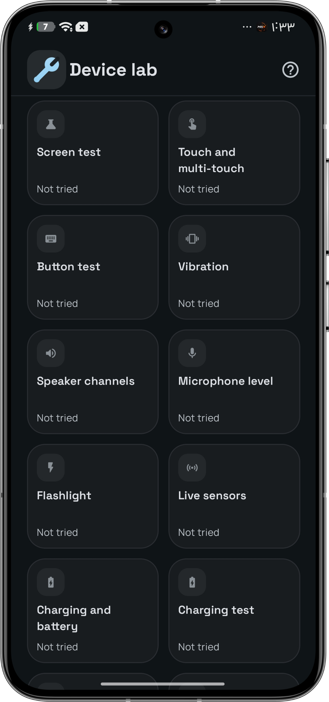
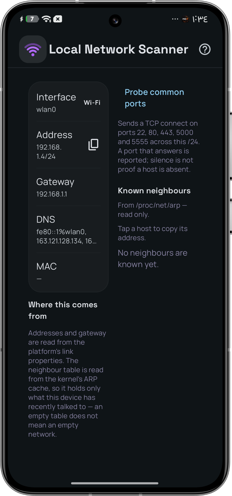

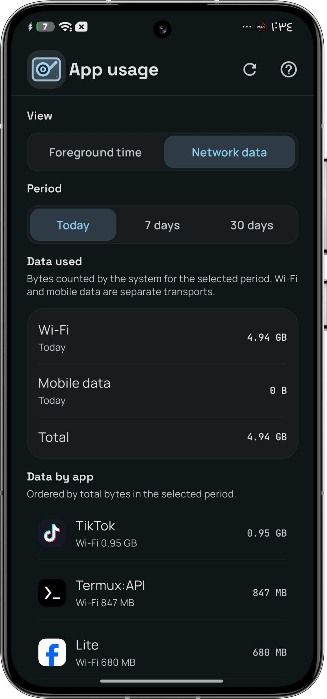
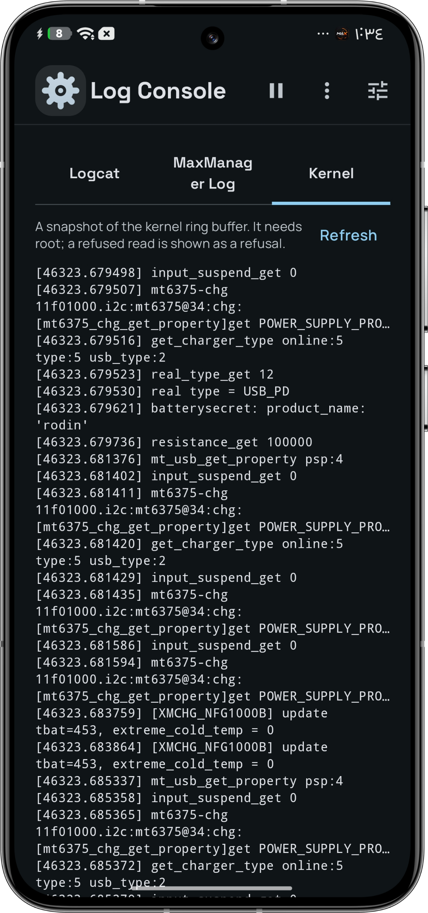


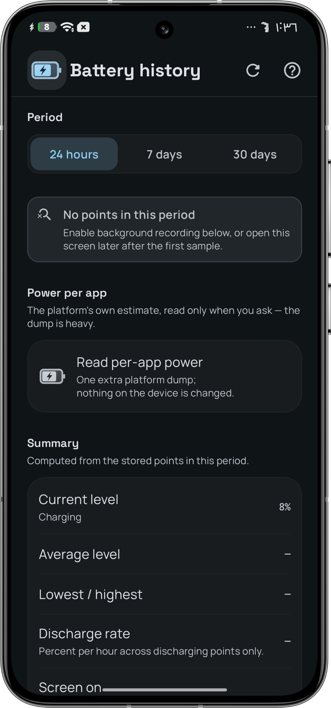


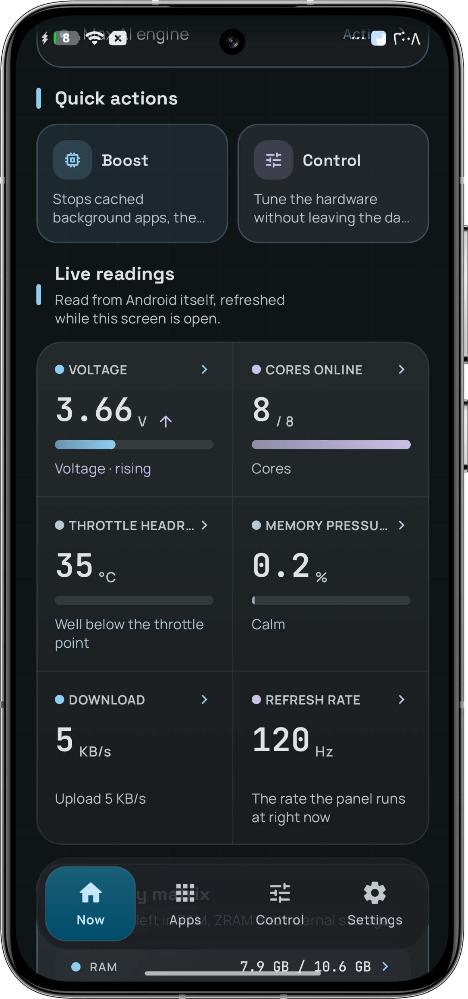
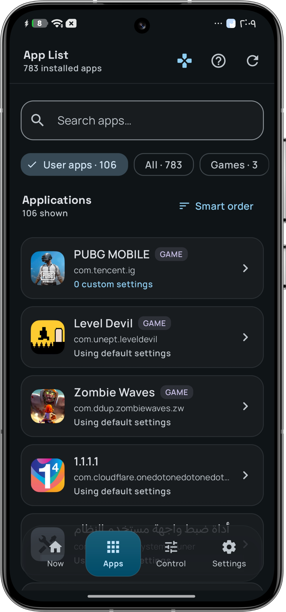
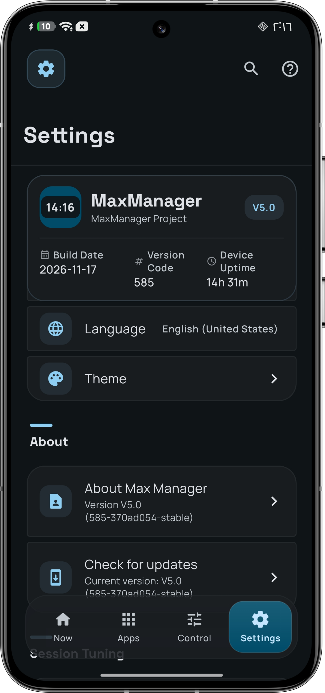
القطع لا تتداخل. واحدة تقرّر ما هو ممكن هنا، وواحدة هي الشيء الوحيد المسموح له بالكتابة، وواحدة تقرّر ما ينبغي تغييره — وطبقة سلامة تعلوها جميعًا.
كل تغيير يُسجَّل، ويُحلّ مقابل سجلّ الملكية، ويُكتب مرة، ويُقرأ مرة أخرى، ويُعاد فحصه لاحقًا بحثًا عن الانحراف.
مفتاح أو شريط. لا شيء يُكتب بعد.
المحكّم يحلّ الملكية ويسأل: هل هذا آمن هنا؟
باب واحد مُدقّق يطبّق التغيير. لا شاشة تكتب إلى النواة.
يُقرأ الجهاز مرة أخرى. استقرّ: يبقى. لم يستقرّ: يُعرض ويُتراجع عنه.
مسار واحد مُدقّق. الجزء المهم ليس الكتابة — بل ما يقوله الجهاز بعدها.
يقرّر ما هو ممكن هنا: أي الواجهات موجودة، وبأي وحدات، وهل يمكن الكتابة إليها، وما استقرّ فعلًا في المرة السابقة.
محكّم واحد، وسجلّ ملكية واحد، وقراءة مرتجعة، وتراجع عندما لا تستقرّ القيمة، وحارس انحراف يعيد الفحص لاحقًا.
يقرّر ما ينبغي تغييره، خطوة مقيسة واحدة في كل مرة، من المفردات التي وجدها Atlas فعلًا على هاتفك. مغلق حتى تشغّله.
الملكية مكتوبة بجوار كل قيمة. ترى هل ضبطها أنت، أم نمط تطبيق، أم الوحدة، أم بقيت على افتراضي النواة — ويمكنك استعادة الملكية اليدوية في أي وقت.
لكل مجال مركزه. والسطر تحت كل اسم هو وصف التطبيق نفسه للمجال، مقتبسًا من الواجهة.
الأنوية والحاكم وتعزيز البائع وتفضيلات النواة. كل عنقود يُقرأ من المنصّة، لا يُخمَّن.
ترددات GPU ومعاملات البائع الخاصة بالرسوميات، مع حدود يدوية ومسار تعزيز البائع.
الضغط وسلوك VM وswappiness. المحرّك يقرأ ضغط تعثّر الذاكرة، لا نسبة امتلائها.
معدّل التحديث واللون ومقياس اللوحة، مع شاشة دقّة مخصّصة ولوحة ألوان.
اللمس وإيقاع الإطارات وزمن الجدولة — ما يسمّيه الناس «استجابة اللمس»، مسمّى بما يفعله.
درجات الحرارة والتقييد ومعاملات الحرارة. نقاط الرحلة لا تُكتب، على أي جهاز.
الشحن والتجاوز والخمول وصحّة البطارية، بما في ذلك سقف الشحن وDoze المتشدّد.
أعد تشغيل تجميع ART بمرشّح مختار، وأعد ضبط الحالة المجمّعة، واقرأ صحّة التخزين.
TCP congestion control وfast-open وSACK وECN وإعادة استخدام المقابس ومواعيد I/O وحالة الرابط.
مخارج الصوت والتدفقات والتأثيرات المعلنة. للقراءة فقط بالتصميم — والجهاز الذي لا يعلن تأثيرات يقول ذلك.
أي شيء لا يكشفه جهازك في أحد هذه المجالات لا يُعرض ببساطة. لا مفتاح ميت لتشرحه. اقرأ قائمة الميزات الكاملة.
هاتفان من الطراز نفسه قد يكشفان واجهات مختلفة. ونواتان قد تسمّيان الواجهة نفسها بوحدات مختلفة — وتسمحان بالكتابة إلى إحداهما دون الأخرى. Atlas يسأل كل واجهة سؤالًا ويتذكّر الجواب.
SUPPORTEDمسار مُراجع موجود، وكتابة تحقّقت على هذا الجهاز.WRITABLEمسار مؤهّل الآن؛ والنجاح لم يُثبت هنا بعد.READ_ONLYالجهاز يجيب القراءات؛ ولا مسار كتابة مؤهّل.NEEDS_ADAPTERالميزة ظاهرة؛ وهذا البناء لا يملك طريقة مُثبتة لقيادتها.UNAVAILABLEالغياب أُثبت بقائمة تخلو من الاسم.NEVER_TOUCHقاعدة سلامة مُراجعة تمنع كتابة هذه الواجهة — دائمًا.UNKNOWNلا شيء قيس، أو لا شيء أجاب ولم يُثبت الغياب.الغياب يجب أن يُثبت. القراءة الفاشلة ليست غيابًا: القائمة الناجحة التي تخلو من الاسم وحدها تثبت أن الاسم غير موجود. وكل ما عدا ذلك يبقى UNKNOWN، لأن القراءة المحجوبة والميزة غير المدعومة تبدوان متطابقتين من الخارج.
ليس روبوت محادثة، وليس جدول قيم سحرية. حلقة تعمل على المقابض التي وجدها Atlas على هاتفك: اختر هدفًا، واعمل أصغر تغيير قد يسدّ الفجوة، وتحقق من السلامة، ونفّذ عبر المسار المعتاد، ثم قس ما حدث.
الجزء المهم ليس الحلقة — بل السجلّ: ما أراده المحرّك، وما غيّره، وما فعله الجهاز بعدها، وما تعلّمه من الفرق.
مغلق حتى تشغّله. التحكّم اليدوي هو الحالة الافتراضية. سياسة الحرارة الخاصة بالبائع تُقرأ، ولا تُتجاوز؛ والسقف الذي يفرضه البرنامج الثابت ниже الطلب يُعرض مقيّدًا — لا «مرفوعًا».
Max AI، اللقطة ٠٣ من ٨٨
يقرأ الحرارة والحمل والبطارية والذاكرة والتطبيق في المقدّمة.
يختار أصغر تغيير كافٍ، لا ثمانية تغييرات دفعة واحدة.
طبقة سلامة بأولوية مطلقة تقول نعم أو لا أولًا.
يعيد قراءة القيمة، ثم يقيس النتيجة بعد نافذة زمنية.
يحتفظ بحلقة كاملة مقيسة — ولا يثق بما كان خاطئًا.
افتح التطبيقات، واختر حزمة، وأعطها معاملتها. كل تطبيق يعرض حالته الفعلية بكلمات واضحة: التحكّم لكل تطبيق مغلق · يستخدم النمط العام · تجاوز التطبيق نشط.
نمط الأداء، ومعدّل التحديث، ودقّة العرض، وسقف الحرارة، وحاكم المعالج والرسوميات — فقط ما يعلنه نواك، وفقط الحكام المدعومة من كل سياسات المعالج.
النمط مجموعة سلوك مسمّاة يمكنك تطبيقها وضبطها وحفظها ومشاركتها. عند التصدير، تحمل كل قيمة مصدرها: افتراضي مشحون، أو قيمة غيّرتها أنت، أو قياس يدّعيه من صدّرها. وعند الاستيراد، يقول التطبيق بالضبط ما قبله وما رفضه.
القيمة المقيسة على شريحة أخرى تقول ذلك. ليست قياسًا على شريحتك. والأنماط متاحة أيضًا من الإعدادات السريعة، فيتغيّر النمط دون فتح التطبيق.
القراءة والقياس والتشخيص شاشات من الدرجة الأولى، لا قائمة تصحيح مركّبة لاحقًا. لا شيء هنا يتصل بالخارج؛ تقرير الدعم يُجمّع محليًّا ولا يغادر إلا إذا سلّمته أنت.
الصورة الحيّة: القراءات الحالية، وما يُسمح للأتمتة بفعله الآن ولماذا، وما ستفعله تاليًا، وهل يمكن التراجع عنه.
قراءة قابلة للسحب لمعدّل الإطارات والمعالج والذاكرة فوق أي لعبة — حتى ثلاثة مراقبات مستقلة، لكل منها حقولها وموضعها.
logcat حيّ مع تصفية وبحث، وتقرير قابل للمشاركة، ومسرد مكتوب داخل ملف السجل نفسه.
استهلاك المعالج والذاكرة لكل عملية، وإيقاف قسري، وSIGKILL، وطبقة عائمة عندما تحتاجها فوق شيء آخر.
مركز تشخيص حيّ، وصحّة مسار لكل مقبض، ومخطّط جهاز قابل لإعادة الإنتاج، وجواب صادق لسؤال «لماذا لم يعمل؟» لإعداد تطبيق.
فحوص عتاد تفاعلية على الجهاز نفسه — ألوان الشاشة، واللمس المتعدد، والمفاتيح، والاهتزاز، وتوجيه الصوت، ومستوى الميكروفون، والحساسات، والقدرات التي تعلنها اللوحة.
الواجهة أداة قياس. قواعدها مكتوبة قيمة بقيمة في المستودع، وبوابة تفشل البناء عندما تختلف الوثيقة والكود.
اللون الأساسي يتبع سمتك، فيأخذ المنتج شكل الهاتف الذي يعمل عليه. أما الإيجابي والتحذير والحرج فثابتة ومفحوصة التباين، لأن إنذارًا حراريًّا يبدو زخرفيًّا عطب صحّة في أداة أداء.
MHz والنسب ودرجات الحرارة وعدد الأنوية لا يعيدون التدفّق أثناء تغيّرها. والقيمة التي لا يملكها التطبيق شرطة طويلة — لا صفر بوحدة بعده.
الحركة موجودة لتشرح تغييرًا، وما يطول عن ذلك زخرفة. وتفضيل تقليل الحركة محترم في هذه الصفحة وفي التطبيق.
فاتح وداكن، ولون أساسي قابل للتغيير، وشاشة لوحة ألوان مخصّصة. ٨٤ لغة، مع فرض RTL ببوابة لا بأمل. اقرأ لغة التصميم.
يُشحن MaxManager كوحدة: لا شيء في /system يُعدّل نهائيًّا، وإزالة التثبيت تعيد كل شيء.
نزّل وحدة .zip من أحدث إصدار أو من آخر تشغيل ناجح. لا تثبّت MaxManager-developer-bundle.zip — ذلك لمطوّري ROM.
اختر «التثبيت من التخزين» وحدّد ملف الوحدة. KernelSU وKernelSU Next مدعومان، والمثبّت يتحقق من وصول الخدمة لمعماريتك قبل أن يعلن النجاح.
اقبل طلب المستخدم الخارق الذي يعرضه مدير الجذر عندما يطلبه MaxManager. بدونه لا يستطيع مستوى التحكّم الكتابة؛ ومع Shizuku وحده تظل عدة أدوات قراءة وكتابة تعمل.
يشرح الإعداد ما يكشفه جهازك قبل أن تلمس أي شيء. التحكّم اليدوي هو الحالة الافتراضية؛ لا يبدأ أي محرّك من تلقاء نفسه.
| المتطلّب | القيمة |
|---|---|
| أندرويد | ١٠ أو أحدث (API 29)، مبنيّ ضد API 37 |
| الجذر | Magisk أو KernelSU أو KernelSU Next |
| المعمارية | arm64-v8a، armeabi-v7a |
| الطبقة الثانية | Shizuku، حيث يمكن أن تساعد — وليست بديلًا عن الوحدة |
| الشرائح | استراتيجيات مخصّصة لـSnapdragon وMediaTek وExynos وTensor وUnisoc؛ وما عداها عبر الاكتشاف |
خذ نسخة من صورة الإقلاع قبل التثبيت، كما في أي وحدة جذر. الجذر قرارك ومسؤوليتك. وإن فشلت الوحدة في الوصول إلى إقلاع مستقر مرتين متتاليتين، تعطّل نفسها وتقول ذلك في وصفها.
ثلاثة وثلاثون حكمًا تعمل قبل المترجم: ستة عشر تأكيدًا، وسبعة عشر أداة تقيس نفسها. والمدقّق الذي لا يستطيع الفشل لا يثبت شيئًا، لذلك يُكسر كل واحد منها عمدًا ويجب أن يسمّي القاعدة التي كان يصطادها.
حكمًا قبل المترجم
| البوابة | ما ترفض تمريره |
|---|---|
kt_balance | أقواس غير متوازنة، أو نصوص أو تعليقات غير مغلقة، أو XML تالف |
code_health | مخالفات النظافة، أو دَين فوق سقفه المعلن، أو أصول غير مفصح عنها |
i18n_coverage | محدّدات تنسيق خاطئة، أو مفاتيح مكررة، أو انحراف المجلد/المنتقي/إعداد اللغات |
resource_compile | موارد غير صالحة، يحكمها aapt2 الحقيقي — لا شبيه له |
rtl_guard | حشو واتجاهات أيقونات لا تنعكس |
license_audit | كود GPL يظهر في أي مكان في مسار الإصدار |
source_manifest | انحراف الشجرة عن بصمة ملفاتها المعلنة |
readme_assets | أصول وروابط مكسورة أو غير آمنة في هذه الوثائق |
screenshot_gallery | معرض انحرف عن المجلد الذي يُولَّد منه |
| غير مُتحقَّق في هذا المستودع | السبب |
|---|---|
| السلوك الفعلي للعتاد | الوحدات وجداول OPP تختلف بحسب البائع؛ واستقرار الكتابة يحتاج الجهاز نفسه |
| صحّة سياسة SELinux | لا شجرة AOSP في هذه البيئة لتشغيل neverallow ضدها |
| سلوك الإقلاع ومنع حلقة الإقلاع | يحتاج جهازًا يُقلع؛ عدّاد المثبّت نفسه هو الدليل |
| الإخراج البصري: RTL والحركة والسمة | يحتاج مُصيّرًا وشاشة — واللقطات هي الدليل |
| مخرج إصدار موقّع | سرّ التوقيع غائب بالتصميم؛ وتشغيل CI مع keystore يتحقق منه |
البناء الأخضر يعني أنه يترجم والاختبارات تمرّ. ولا يعني أن كتابة تستقرّ على عتادك. هذه الجملة قاعدة في هذا المشروع، لا تحوّط — verification.md يسرد ما أُثبت، وما يعمل بلا جهاز، وما يحتاج هاتفًا.
النسخة القصيرة من أحدث إصدار. التاريخ الكامل يعيش في ملف واحد في جذر المستودع.
أُعيد تصميم مساحة الألعاب حول لوبي سينمائي مع أدوات داخل اللعب وسجلّ جلسات ومقارنة أداء؛ وMax AI صار بثلاثة أنماط — هادئ ومتوازن وحاسم — ويتوقّع أثر التغيير قبل تطبيقه؛ ومركز التحكّم رُتّب بحسب المجال؛ ومختبر الجهاز وتحليل البطارية ومسجّل الشاشة والبحث نال كلٌّ منها أدواته التي يسمّيها الإصدار.
الإصدارات الأقدم مسجّلة بالكامل في changelog.md.
نعم، لمستوى التحكّم الكامل. MaxManager وحدة بلا لمس النظام لـMagisk أو KernelSU: يصل التطبيق إلى النواة عبر جسر جذر واحد مُدقّق، وتعمل الخدمات كعمليات في جانب النظام. ويُكتشف Shizuku (مستوى ADB، بلا جذر) أيضًا ويفتح عدة أدوات قراءة وكتابة، لكنه ليس بديلًا عن الوحدة.
غالبًا — لكنك لا تحتاج إلى التخمين. يحلّ MaxManager القدرات لكل واجهة قبل عرض أي شيء، فالمقبض الذي لا يكشفه جهازك لا يظهر أبدًا كمفتاح لا يفعل شيئًا. افتحه واقرأ الخريطة: ذلك الجواب عن هاتفك، وهو أفضل من أي قائمة.
يعرض MaxManager ما تنشره النواة فعلًا: حدود تردد المعالج والرسوميات، والمحكّمات، وسلوك الذاكرة وZRAM، ومعدّل التحديث، وزمن اللمس والجدولة، وقراءات الحرارة، والشحن وصحّة البطارية، وإعدادات الشبكة، وتصريف ART. ولا يبتكر مفتاحًا حين تغيب الواجهة، ويُقرأ كل تغيير مقبول من الجهاز.
يمكنه إزالة الحدود القابلة للإزالة وتطبيق نمط لكل تطبيق أثناء وجود اللعبة في المقدمة: حدود المعالج والرسوميات، وإعدادات الجدولة واللمس، وسياسة تراعي الحرارة. ولا يستطيع أن يجعل هاتفًا ساخنًا باردًا أو أن يعد بمعدّل إطارات لا يحتمله العتاد. النتيجة التي تراها هي المقيسة، وتبقى status_unknown ظاهرة حين لا يجيب الجهاز.
يمنحك المقابض التي تؤثّر في الطاقة — سقف الشحن، والشحن بالتجاوز، والخمول، وسلوك النوم، وسياسة كل تطبيق — ويعرض أثرها المقيس بدل نسبة تسويقية. ومقدار ما توفّره من البطارية يعتمد على جهازك وROM وما تغيّره فعلًا.
لا. التحكّم اليدوي هو الحالة الافتراضية، وMax AI وMax Atlas ومحرّكات كل تطبيق أشياء تشغّلها أنت. وعندما تفعل، تظل طبقة السلامة ذات الأولوية المطلقة.
status_unknown بدل 0؟لأن 0 ادّعاء. المشروع يمنع التليمتري المُصنَّع: عندما لا يعرف، يقول ذلك بدل عرض صفر يبدو معقولًا. الحقل الذي يبدو فارغًا أصدق من رقم خاطئ.
ثلاث طبقات مستقلة. تُقرأ القيم بعد كتابتها، ويُعرض عدم التطابق مع محاولة تراجع. ويعيد حارس الانحراف الفحص لاحقًا، لأن الإعداد قد يرتدّ بصمت. ويعطّل المثبّت نفسه إن فشلت الوحدة في الوصول إلى إقلاع مستقر مرتين متتاليتين.
لا قياس عن بُعد، ولا تحليلات، ولا رفع صامت. تقرير التشخيص يُبنى محليًّا ويُقلَّل، ولا يغادر جهازك إلا إذا سلّمت الملف بنفسك. تقرير الدعم ليس لقطة شاشة.
المستودع العام ليس الشيء نفسه مشروع مفتوح المصدر. MaxManager برنامج مغلق المصدر؛ والمستودع صفحة منتجه وعدّة تكامله مع ROM وسجلّه الهندسي. ولا يُمنح أي حق في الاستخدام أو النسخ أو التعديل أو التوزيع دون إذن كتابي مسبق من صاحب حقوق النشر. وتحتفظ مكوّنات الطرف الثالث بتراخيصها، مسرودة فردًا فردًا في الإشعارات.
هذه الصفحة هي الجولة. وهذه هي الأجوبة التي تعود إليها بعدها.
أرسل الجهاز، وROM، ومدير الجذر، وما عرضه التطبيق. وإن قال status_unknown، قل ذلك — إنها حقيقة عن جهازك، لا خطأ منك.